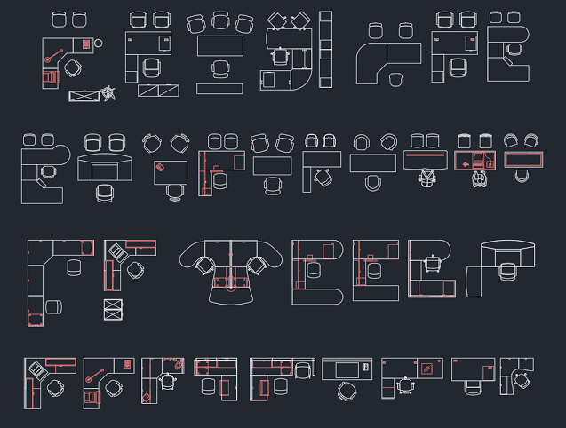
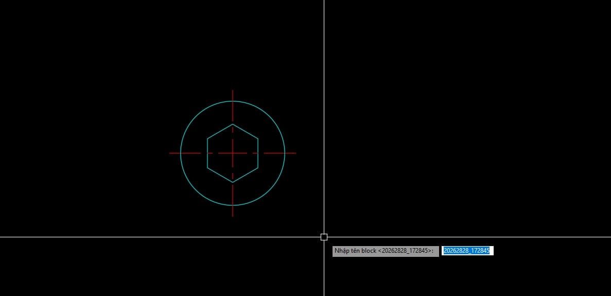

Trong quy trình triển khai bản vẽ AutoCAD thông thường, việc tạo Block bằng lệnh chuẩn B (Block) thường mang lại trải nghiệm tương đối cồng kềnh: bạn phải đối mặt với hộp thoại lớn che khuất tầm nhìn, bắt buộc gõ tên cho từng khối, bấm chọn đối tượng và chọn điểm gốc bằng vô số bước click chuột. Chưa kể khi bạn lỡ tay nhập một tên Block đã tồn tại trước đó, CAD sẽ báo lỗi hoặc chèn nhầm đè lên block cũ gây náo loạn hồ sơ.
In the typical AutoCAD drafting process, creating a Block using the standard B (Block) command often results in a cumbersome experience: you have to deal with a large dialog box obscuring your view, manually type a name for each block, select objects, and pick a base point through numerous clicks. Furthermore, if you accidentally enter an existing Block name, CAD will either throw an error or mistakenly overwrite the old block, causing chaos in your project files.
Để tối ưu hóa hiệu suất thiết kế, iViDLab ra mắt Lisp Quick Block (BB) — giải pháp đóng block siêu tốc không qua hộp thoại, được trang bị cơ chế thông minh cho phép tự động định danh theo Ngày_Giờ (Timestamp) cực nhanh nếu bạn không muốn tốn công nghĩ tên!
To optimize design performance, iViDLab introduces the Quick Block (BB) Lisp — an ultra-fast block creation solution without a dialog box, equipped with a smart mechanism that allows automatic naming based on Timestamp if you don't want to spend time thinking of a name!

Hình 1: Cụm đối tượng được gom nhanh thành một Block vững chắc và chèn trực tiếp lại trên màn hình chỉ bằng hai bước chốt chuột Figure 1: Object clusters are quickly grouped into a solid Block and inserted directly back on the screen with just two clicksCông cụ Quick Block (BB) mang đến bước tiến căn bản trong việc gia tăng tốc độ triển khai bản vẽ, được tối ưu xoay quanh những thói quen thực tế nhất của các kỹ sư:
The Quick Block (BB) tool brings a fundamental leap in increasing drawing deployment speed, optimized around the most practical habits of engineers:
| Tính NăngFeature | Giá Trị Mang Lại Cho Kỹ Sư & Kiến Trúc SưValue Delivered to Engineers & Architects |
|---|---|
| Đóng Gói Siêu Tốc (No Dialog)Ultra-fast Packaging (No Dialog) | Bỏ qua toàn bộ giao diện hộp thoại phức tạp của AutoCAD. Chỉ cần quét chọn, chấm điểm gốc (Base Point) và chốt — Block được ra đời và chèn lại (insert) chuẩn xác tại đúng vị trí của bạn trong nháy mắt. Skip the complex AutoCAD dialog interface entirely. Just select objects, pick a Base Point, and finalize — the Block is created and inserted precisely at your location in a flash. |
| Tự Động Đặt Tên Theo Ngày Giờ (Timestamp Naming)Automatic Timestamp Naming |
Khi được nhắc đặt tên, nếu bạn lười nghĩ tên và nhấn Enter luôn (để trống), Lisp lập tức sử dụng hàm thời gian thực để tạo tên độc bản theo định dạng YYYYMMDD_HHMMSS (Ví dụ: 20260728_173512), không bao giờ lo gián đoạn mạch làm việc.
When prompted for a name, if you are too lazy to think of one and just press Enter (leave it blank), the Lisp instantly uses a real-time function to create a unique name in the format YYYYMMDD_HHMMSS (Example: 20260728_173512), never interrupting your workflow.
|
| Hỗ Trợ Tên Chứa Dấu Cách (Whitespace Supported)Whitespace Supported Naming |
Khắc phục hạn chế của các Lisp cũ thường bị ngắt lệnh khi bạn gõ dấu phím cách. Lisp BB cho phép bạn nhập các tên dài có khoảng trắng thoải mái (Ví dụ: Cụm bàn ghế ăn bàn tròn 6 ghế) mà chỉ kết thúc khi bạn thực sự nhấn phím Enter.
Overcomes the limitations of older Lisps that often interrupt the command when you type a space. The BB Lisp allows you to freely input long names with spaces (Example: Dining table cluster with 6 chairs) and only finishes when you actually press the Enter key.
|
| Bảo Vệ & Chống Trùng Lặp Tên Thông MinhSmart Protection & Anti-Duplicate Naming |
Nếu bạn tình cờ gõ một tên block đã tồn tại trong bộ đệm bản vẽ, cơ chế quét bảng thuộc tính sẽ lập tức kích hoạt, tự động bổ sung số thứ tự tiếp theo (Ví dụ: Chi_Tiet_1, Chi_Tiet_2), ngăn chặn 100% rủi ro ghi đè hỏng hóc các block cũ!
If you accidentally type a block name that already exists in the drawing buffer, the attribute table scanning mechanism immediately activates, automatically appending the next sequential number (Example: Detail_1, Detail_2), preventing a 100% risk of overwriting and damaging old blocks!
|
Thao tác với Lisp BB vô cùng tiện lợi, mạch lạc theo các bước sau:
Operating with the BB Lisp is incredibly convenient and coherent through the following steps:
BB (rồi nhấn Space / Enter).
In the workspace, enter the shortcut on the Command Line: type BB (then press Space / Enter).
No objects selected... nếu bạn click truợt chuột) và click chấm điểm Gốc (Base Point).
Select all objects to be grouped into a Block (the system will warn No objects selected... if you misclick) and click to pick the Base Point.
Enter block name <20260728_...>: — Bạn có thể gõ tên tùy ý (chứa dấu cách tùy thích) rồi nhấn Enter, hoặc nhấn Enter ngay lập tức để chốt tên Ngày Giờ gợi ý. Block lập tức ra đời và hoàn thiện!
When the command bar prompts: Enter block name <2026...>: — You can type any name (with spaces as you like) then press Enter, or immediately press Enter to accept the suggested Timestamp name. The Block is instantly created and finalized!
BB - Hướng dẫn tuỳ chỉnh đổi phím tắt trong AutoLISP (nếu bạn có nguyện vọng đổi sang phím tắt khác như QB hay BN theo tổ hợp phím riêng).
Command: BB - How to customize AutoLISP commands (if you desire to change it to another shortcut like QB or BN according to your own key combination).

Hình 2: Thao tác gõ lệnh BB và cơ chế gợi ý chốt nhanh tên Block mặc định theo giây hệ thống trên Command Line Figure 2: Typing the BB command and the mechanism to quickly suggest the default Block name based on system seconds on the Command LineTải về bộ công cụ gốc ngay tại đường dẫn bên dưới:
Download the original toolkit via the link below:
BB_Quick_Block_Creator.lsp